안티그래비티
초보자 교육자료
Google Antigravity · Skills · MCP(Stitch) · Gemini API
코드를 몰라도 따라 할 수 있습니다.
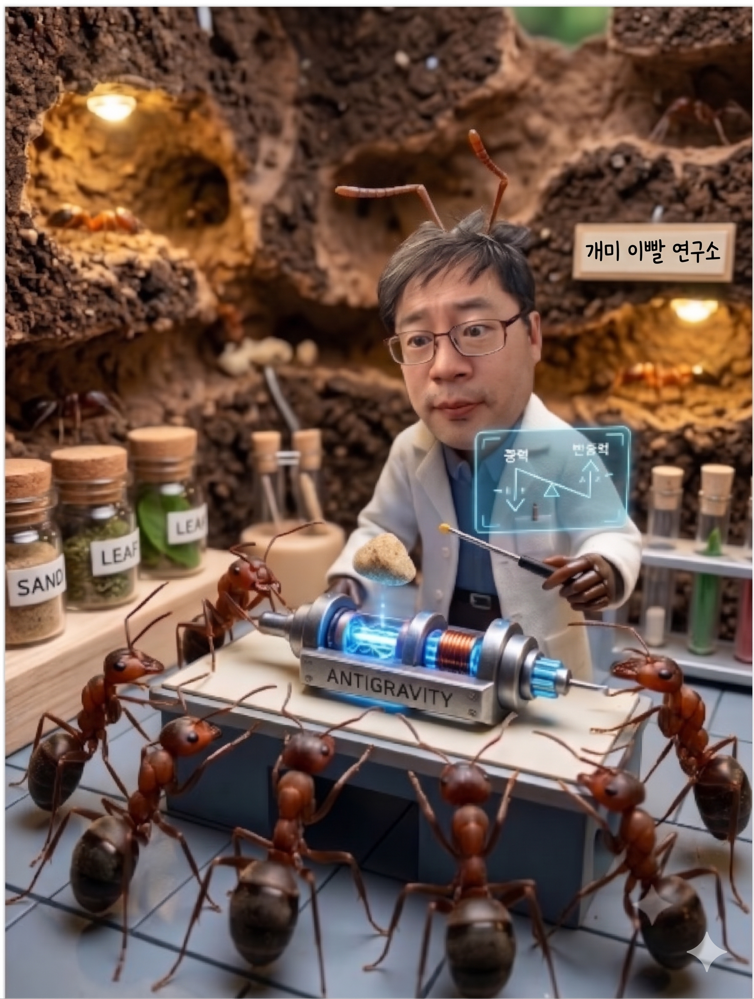
이 교육이 끝나면 이렇게 됩니다
코드를 직접 쓰지 않습니다. 에이전트에게 정확하게 지시하는 법을 배웁니다.
말로 앱을 만든다
화면 디자인부터 배포까지 한국어 지시만으로 진행
AI에게 규칙을 준다
GEMINI.md · Skill 로 매번 같은 품질의 결과
외부 도구를 붙인다
MCP로 Stitch · Gemini API를 에이전트 손에 쥐여주기
「현재 상황」과 「기도 제목」을 입력하면 기도문을 자동으로 만들어 주는 웹 프로그램
여러분이 하는 일 — 프롬프트를 순서대로 붙여넣기 · 에이전트가 하는 일 — 나머지 전부
전체 커리큘럼
앞에서 만든 것을 뒤에서 계속 씁니다. 순서대로 따라오세요.
1~2장은 개념과 설치, 3~5장은 도구 연결, 6장은 앞의 모든 것을 합치는 실습입니다.
안티그래비티란?
개념부터 잡고 갑니다 — 용어 4개만 이해하면 됩니다.
먼저, 무엇이 달라졌나
AI 개발 도구는 3세대를 거쳐 왔습니다. 안티그래비티는 3세대입니다.
자동완성
내가 코드를 치면 AI가 다음 줄을 추천
대화형
챗봇에게 물어보고 답을 복사해서 붙여넣기
에이전트
목표만 주면 계획 · 실행 · 검증까지 스스로 수행
1·2세대는 「코드를 쓰는 사람」이 필요했지만, 3세대는 「무엇을 원하는지 설명하는 사람」이 필요합니다.
그래서 비개발자도 결과물을 만들 수 있게 되었습니다. 대신 「잘 설명하는 능력」이 실력이 됩니다.
안티그래비티(Antigravity)란?
구글이 만든 ‘에이전트 우선(agent-first)’ 개발 도구입니다.
anti + gravity = 반(反)중력
개발을 무겁게 눌러온 중력 — 반복 작업, 환경 설정, 문법 외우기 — 에서 사람을 띄워 올린다는 뜻입니다.
- 기존 IDE — 사람이 코드를 쓰고 AI가 거든다
- 안티그래비티 — 에이전트가 일하고 사람이 지휘한다
출처 Google Antigravity 공식 문서 (antigravity.google/docs)
에이전트(Agent)란 무엇인가
한 줄 정의 — 스스로 계획을 세우고 도구를 써서 일을 끝까지 해내는 AI 일꾼
챗봇은 「말」을 돌려주고, 에이전트는 「결과물」을 돌려줍니다.
파일
폴더를 읽고, 파일을 만들고 고칩니다
터미널
설치 · 실행 명령을 직접 입력합니다
브라우저
만든 화면을 직접 열어보고 캡처합니다
회사 규정집을 준다 → GEMINI.md · 업무 매뉴얼을 준다 → Skill · 외부 시스템 열쇠를 준다 → MCP
에이전트 · GEMINI.md · Skill · MCP — 이 4가지가 이번 교육에서 배울 전부입니다. 하나씩 채워 넣으면 에이전트의 결과물이 좋아집니다.
안티그래비티의 두 가지 화면
에디터 뷰에서 결과물을 보고, 에이전트 매니저에서 일을 시킵니다.
에디터 뷰
- 파일과 코드를 직접 보는 화면
- VS Code를 써봤다면 그대로 익숙함
- 에이전트가 만든 결과를 확인 · 수정
에이전트 매니저
- 여러 에이전트에게 동시에 일을 시키는 관제탑
- 진행 상황 · 계획 · 보고서를 한눈에
- MCP 서버 설정도 여기에서
GEMINI.md 를 설정해야 하는 이유
에이전트가 매 대화마다 자동으로 읽는 「우리 프로젝트 규정집」입니다.
- 매번 같은 설명을 처음부터 반복
- 물어보지도 않고 낯선 기술을 골라서 씀
- 영어로 길게 설명해 무슨 말인지 모름
- 새 대화를 열면 어제 정한 것을 다 잊음
- 확인도 없이 파일을 지우거나 덮어씀
- 말하지 않아도 우리 규칙대로 움직임
- 정해둔 기술 스택만 사용
- 항상 한국어로, 비개발자 눈높이로 설명
- 새 대화에서도 규칙이 그대로 유지
- 위험한 작업 전에 반드시 확인을 받음
프롬프트는 「이번 한 번만」, GEMINI.md 는 「앞으로 계속」 적용되는 지시입니다.
규칙 파일은 어디에 두는가
적용 범위에 따라 두 곳으로 나뉩니다. 둘 다 있으면 프로젝트 규칙이 더 구체적으로 작동합니다.
~/.gemini/GEMINI.md
모든 프로젝트에 공통으로 적용 (말투, 언어, 기본 태도)
<프로젝트>/.agents/rules/
이 프로젝트의 기술 스택 · 규칙 (팀과 공유 가능)
규칙 파일 1개는 12,000자까지 쓸 수 있습니다. 길게 쓰기보다 짧고 분명하게 쓰는 편이 더 잘 지켜집니다.
스킬(Skill)이란 무엇인가
특정 업무를 「어떻게 하는지」 적어둔 작업 매뉴얼 폴더입니다.
my-skill/ SKILL.md ← 필수. 작업 방법을 적은 문서 scripts/ ← 선택. 반복 작업용 스크립트 examples/ ← 선택. 참고 예시 resources/ ← 선택. 템플릿 · 이미지
--- name: brainstorming description: 막연한 아이디어를 질문으로 구조화된 설계로 바꿀 때 사용 --- # 진행 방법 1. 사용자에게 목적을 되묻는다 ...
발견
대화를 시작할 때 어떤 스킬이 있는지 목록만 훑어봅니다
활성화
지금 작업에 맞는 스킬을 골라 내용을 전부 읽습니다
실행
매뉴얼에 적힌 순서대로 작업을 수행합니다
스킬은 열린 표준입니다. 한 번 만든 스킬을 클로드 · 커서 등 다른 AI 도구에서도 그대로 쓸 수 있습니다. 또 반드시 “이 스킬을 써”라고 지시하지 않아도 에이전트가 상황을 보고 알아서 고릅니다.
정리 — 규칙 · 스킬 · MCP는 어떻게 다른가
세 가지를 헷갈리지 않는 것이 1장의 목표입니다.
| 규칙 (GEMINI.md) | 스킬 (SKILL.md) | MCP | |
|---|---|---|---|
| 무엇인가 | 항상 지켜야 할 원칙 | 특정 작업의 수행 방법 | 외부 서비스 연결 통로 |
| 비유하면 | 사내 규정집 | 업무 매뉴얼 | 외부 시스템 열쇠 |
| 언제 쓰이나 | 모든 대화에 자동 적용 | 관련 작업일 때만 | 외부 데이터가 필요할 때 |
| 예시 | “항상 한국어로 설명” | /grill-me | Stitch · GitHub · Supabase |
셋은 경쟁 관계가 아니라 겹쳐 쌓는 층입니다. 규칙 위에 스킬을 얹고, 그 위에 MCP로 바깥 세상을 연결합니다.
안티그래비티 IDE 설치 및 기본 설정
15분이면 끝납니다. 설치 → 로그인 → 첫 프로젝트 → 첫 규칙.
설치하기 — 4단계
공식 사이트에서 내려받아 설치합니다. 다른 경로로 받지 마세요.
다운로드
antigravity.google/download 접속
설치 실행
내 운영체제에 맞는 파일 실행
구글 로그인
첫 실행 시 구글 계정으로 로그인
설정 가져오기
VS Code 사용자라면 설정을 그대로 이전
첫 프로젝트 만들기
프로젝트 = 에이전트가 들어갈 수 있는 「울타리」입니다. 이 안의 파일만 읽고 씁니다.
바탕화면에 폴더를 하나 만들고 이름을 prayer-app 으로 지어 주세요.
바탕화면 전체나 「문서」 폴더 전체를 프로젝트로 잡지 마세요. 에이전트가 건드릴 수 있는 범위가 너무 넓어집니다.
실행 모드 Local Mode = 지금 폴더에서 바로 작업 / Worktree Mode = 복사본에서 안전하게 실험
첫 명령을 내려봅시다
에이전트가 파일 · 터미널 · 브라우저를 실제로 쓰는지 눈으로 확인하는 단계입니다.
이 폴더에 hello.html 파일을 만들어줘. 화면 가운데에 "안티그래비티 첫 실습" 이라고 크게 보이게 해줘. 다 만들면 브라우저로 직접 열어서 화면을 캡처해 보여줘.
계획을 먼저 보여준다
무엇을 할지 목록으로 정리해 제시합니다
파일을 직접 만든다
왼쪽 탐색기에 hello.html 이 생깁니다
브라우저를 연다
직접 열어보고 캡처를 첨부합니다
“왜 실패했는지 한국어로 설명하고 다시 시도해줘” 라고 그대로 답하면 됩니다.
나의 첫 GEMINI.md 만들기
목표 — 앞으로 모든 대화에 자동 적용될 전역 규칙을 만듭니다.
모든 대답은 한국어로 해주세요. 모든 goal도 한국어로 나타내주세요. 모든 작업 과정도 한국어로 나타내주세요. 코드를 수행하기 전에는 반드시 관련 파일을 먼저 읽고 문맥을 파악하세요. 사용자의 질문에 대해 단순히 답변만 하지 말고, 필요한 경우 더 나은 대안을 적극적으로 제시하세요. 새로운 패키지 설치 시, 사용 가능한 최신 안정버전을 우선 고려해 주세요.
- 파일 경로가
~/.gemini/GEMINI.md로 안내되면 성공입니다. - 새 대화를 하나 열고 “지금 적용 중인 규칙을 알려줘” 라고 물어 확인해 보세요.
- 규칙을 바꾸고 싶을 땐 이 파일을 고쳐 달라고 말하면 됩니다.
일하는 방식까지 규칙으로 정한다
목표 — 2-1의 「말투 규칙」에 더해, 에이전트가 어떤 순서와 태도로 일할지를 전역 규칙에 추가합니다. (계획 먼저 · 막히면 질문 · 설명은 간결하게)
새로운 패키지 설치 시, 사용 가능한 최신 안정버전을 우선 고려해 주세요. Thought Process(추론 과정)는 핵심만 간결하게 작성하고, 이미 확인된 사실을 반복해서 되뇌지 마세요. 결과물에 대한 설명은 핵심 위주로 간략하게 작성해 주세요. 동일한 문제로 3회 이상 실패하거나 막힐 경우, 계속 스스로 해결하지 말고 멈춰 서서 사용자에게 확인을 요청하세요. 추측성 추론을 길게 하기보다, 우선 view_file 등의 도구를 사용해서 사실관계를 먼저 확인하세요. Tailwind CSS 사용 시, 임의의 값(arbitrary values)보다는 설정된 테마 토큰을 우선 사용해 주세요. 모든 UI는 반응형을 고려해 주세요. 중복 코드는 적극적으로 리팩토링하여 재사용 가능한 컴포넌트나 유틸리티로 분리해 주세요. 현재 작업 지시를 벗어나서 선제적인 유지보수, 업데이트 또는 불필요한 리팩토링을 수행하지 마세요. 명시적인 요청에만 집중하세요. 작업은 항상 단계별로 실행하세요. 반드시 '계획 모드'로 시작하여 구현 계획을 작성하고, 내가 해당 계획을 명시적으로 승인하기 전까지는 코드를 작성하는 '구현 모드'로 진입하지 마세요. 작업이 끝난 후 README.md 를 만들어 주세요 — 이 앱이 무엇인지, 설치 방법, 실행 방법
~/.gemini/GEMINI.md를 열어 2-1의 규칙 아래에 이 내용이 이어 붙었는지 확인하세요.- 새 대화에서 아무 작업이나 시켜 보세요. 코드를 바로 쓰지 않고 계획을 먼저 보여주고 승인을 기다리면 성공입니다.
- 규칙이 너무 많다고 느껴지면 줄여도 됩니다. 길게 쓰기보다 짧고 분명하게 쓰는 편이 더 잘 지켜집니다.
Skill.sh 를 통한 스킬 설정
에이전트에게 검증된 업무 매뉴얼을 통째로 설치합니다.
/learn 명령왜 스킬을 따로 설치할까
기본 에이전트는 똑똑하지만 「우리 일의 요령」은 모릅니다. 스킬이 그 요령을 채워 줍니다.
“기도문 앱 만들어줘”
→ 바로 코드를 쏟아냅니다. 내가 뭘 원했는지 정리되지 않은 채 결과부터 나옵니다.
“/grill-me 기도문 앱”
→ 먼저 질문을 던져 목적 · 사용자 · 화면을 정리한 뒤, 설계를 문서로 만들어 줍니다.
여러 사람이 만들어 공개한 스킬을 한곳에 모아 둔 저장소이자 설치 도구입니다. 명령어 한 줄이면 내 안티그래비티에 스킬이 설치되고, 이후에는 /learn 명령으로 검색 · 설치 · 삭제를 할 수 있습니다. 안티그래비티 외에 클로드 · 커서 · 코파일럿 등 15개 이상의 도구를 함께 지원합니다.
스킬 설치 — 명령 한 줄
터미널에 아래 명령을 붙여넣고 Enter 를 누르세요.
npx skills add https://github.com/anthropics/skills --skill canvas-design
도구 탐지
설치된 AI 도구를 자동으로 찾습니다
대상 선택
목록에서 Antigravity를 선택합니다
스킬 설치
선택한 스킬을 한 번에 설치
재시작
IDE를 껐다 켜고 새 대화를 시작
설치가 끝나면 안티그래비티를 완전히 종료했다가 다시 켜고, 반드시 「새 대화」에서 사용해야 스킬이 인식됩니다.
전역 설정 vs 지역(프로젝트) 설정
같은 스킬을 어디에 두느냐에 따라 적용 범위가 달라집니다.
~/.gemini/config/skills/
~/.gemini/antigravity/skills/
- 어떤 폴더를 열어도 항상 사용 가능
- 혼자 쓰는 범용 스킬에 적합
- 예: 브레인스토밍, 글쓰기, 코드 리뷰
<프로젝트>/.agents/skills/
(구버전 호환 : .agent/skills/)
- 프로젝트 폴더와 함께 팀에 공유됨
- 이 프로젝트만의 규칙 · 절차에 적합
- 예: 우리 회사 문서 양식, 배포 절차
이름이 같은 스킬이 양쪽에 있으면 「지역(프로젝트) 스킬」이 이깁니다. 프로젝트 사정이 더 구체적이기 때문입니다.
처음에는 전역으로 설치해 쓰다가, 팀과 공유할 스킬만 프로젝트로 옮기는 방식을 권합니다.
스킬 검색 예제 — canvas-design
원하는 스킬을 검색한 후, 상세 페이지의 설치 명령을 복사해서 사용합니다.
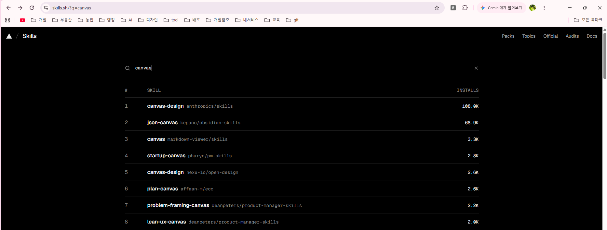
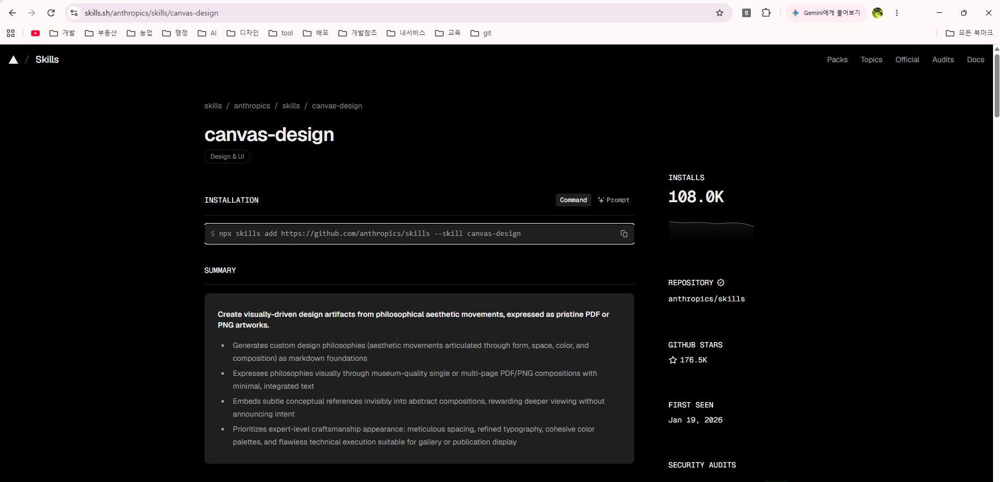
03 · 설치한 스킬을 대화하듯 사용하기
스킬 이름을 부르고, 원하는 화면을 자세히 설명할수록 결과가 좋아집니다.
[canvas-design](slashCommand;canvas-design) [Role & Persona] 당신은 세계적인 수준의 UI/UX 디자이너이자 수석 프론트엔드 엔지니어입니다. 사용자 경험을 극대화하면서도 심미적으로 뛰어난 웹 인터페이스를 설계하고, 이를 실제 코드로 구현하기 좋은 구조로 기획하는 데 탁월한 능력을 가지고 있습니다. [Core Task] 'AI 바이브 코딩(Vibe Coding) 개발자를 위한 통합 에이전트 대시보드'의 메인 화면을 캔버스로 디자인하세요. 단순한 레이아웃 구성을 넘어, 실제 작동할 것 같은 정교한 디테일과 인터랙션 요소가 시각적으로 분명하게 드러나야 합니다. [Tech Stack & Environment (Visual Tone)] - Framework: React, Vite 기반의 SPA 느낌 - Styling: Tailwind CSS의 유틸리티 클래스 기반 디자인 시스템 적용 (4배수 여백 규칙) - UI Components: shadcn/ui 스타일의 미니멀하고 직관적이며 접근성 높은 컴포넌트 룩앤필 [Design System & Principles] 1. Color Palette: 세련된 다크 모드(Deep Midnight Blue & Slate 계열)를 배경으로 사용하고, Primary 컬러로 형광빛이 도는 블루(#3B82F6)와 퍼플(#8B5CF6) 그라데이션을 포인트로 활용하세요. 2. Typography: 가독성이 뛰어난 모던 산세리프 폰트를 사용하고, 정보의 위계(Hierarchy)를 폰트 크기, 굵기, 색상 대비(Contrast)로 명확히 구분하세요. 3. Layout Structure: - 좌측: 얇고 미니멀한 사이드바 (프로젝트, 설정, AI 에이전트 라우팅, 로컬 브라우저 스토리지 상태 아이콘) - 중앙 (메인 캔버스): Split View 형태의 실시간 코드 에디터 및 AI 프롬프트 채팅 인터페이스 - 우측 또는 하단: 리소스 사용량 및 AI 모델(Claude 4.5 등) API 상태를 보여주는 플로팅 패널 4. Visual Details: - 카드 및 정보 패널에는 미세한 Glassmorphism 효과(반투명 배경 및 블러)와 1px의 은은한 테두리(border-white/10)를 적용하세요. - 주요 액션 버튼(CTA)과 인터랙티브 요소에는 Hover 상태를 암시하는 부드러운 글로우(Glow) 효과를 배치하세요. [Specific Output Requirements] - 화면의 빈 공간을 단순한 여백이 아닌 '의도된 공간(White Space)'으로 활용하여 복잡한 개발 도구임에도 깔끔한 인상을 주어야 합니다. - 데이터 시각화 요소(예: 최근 프로젝트 기여도, 시간대별 생산성 패턴 등)를 스파크라인(Sparkline)이나 미니멀한 그래프 형태로 반드시 1개 이상 포함하여 전문성을 높여주세요.
이미지 생성 결과
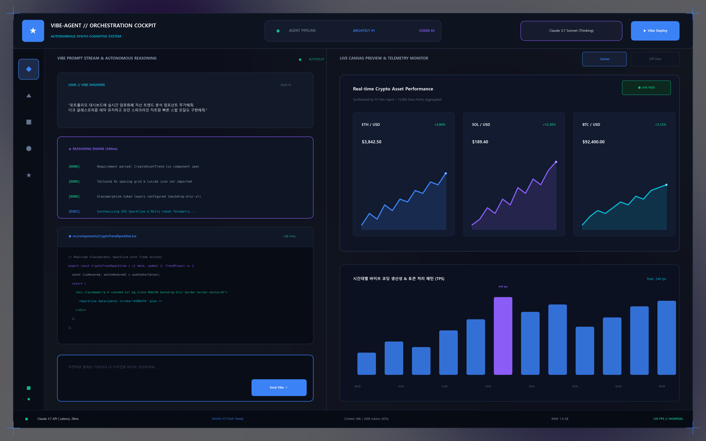
스킬 등록 후 사용 — slack-gif-creator
설치 → 새 대화에서 한국어로 요청 → 결과물 생성까지의 흐름입니다.
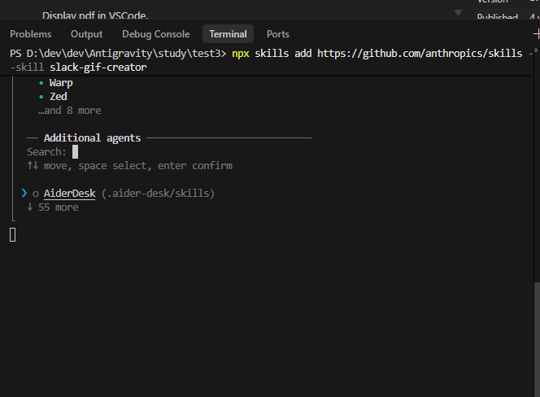
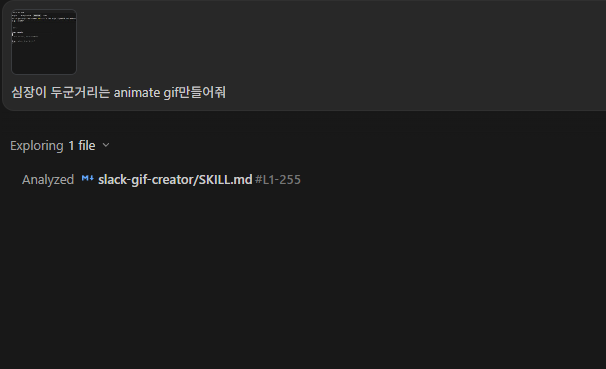
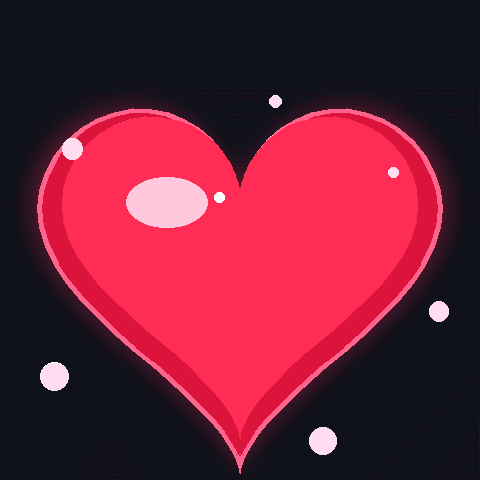
나만의 스킬 등록하기 — prd-writer
요구사항 정의서(PRD)를 순서대로 물어보며 작성해 주는 스킬을 전역으로 등록합니다.
아래의 내용을 전역 스킬로 등록해줘. # skill명 : prd-writer - 아래 - 너는 전문 IT 서비스 기획자(PO)야. 나는 PRD(요구사항 정의서)를 작성하려고 해. # 절대 규칙 (반드시 지켜야 함) - 아래 8개 항목을 순서대로 하나씩만 질문해. - 내가 "다음 진행"이라고 말하기 전까지는 절대로 다음 항목으로 넘어가지 마. - 현재 항목의 질문에만 집중하고, 내 답변을 바탕으로 해당 항목을 정리해줘. - 항목이 정리되면 "다음 진행이라고 말씀해 주시면 다음 항목으로 넘어가겠습니다."라고 안내해. # PRD 작성 순서 (이 순서대로 진행) 1. 프로젝트 개요 2. 사용자 시나리오 3. 핵심 기능 목록 4. 기술 스택 5. 화면 구성 6. 상세 기능 명세 7. 디자인 가이드 8. 제약 사항 # 시작 지금 바로 첫 번째 항목인 **프로젝트 개요**부터 시작해줘. 앱 이름, 한 줄 설명, 서비스 유형(개인용/팀용 등), 난이도(초급/중급/고급)를 정하기 위한 질문을 해줘.
C:\Users\<사용자>\.gemini\config\skills\prd-writer 폴더에 SKILL.md 가 만들어져 있으면 성공입니다.
/learn 명령어 한눈에 보기
설치가 끝나면 에이전트 입력창에서 바로 쓸 수 있습니다.
| 입력 | 하는 일 |
|---|---|
/learn | 지금 프로젝트를 보고 어울리는 스킬을 추천 |
/learn list | 설치된 스킬 목록 보기 |
/learn update | 설치된 스킬을 최신으로 갱신 |
/learn remove <이름> | 스킬 삭제 |
설치된 스킬은 이름 앞에 「/」를 붙여 부르거나, 그냥 한국어로 설명만 해도 에이전트가 알아서 골라 씁니다.
MCP 연결 — Stitch 연동하기
에이전트에게 바깥 세상의 도구를 쥐여 줍니다.
MCP 란 무엇인가
Model Context Protocol — AI와 외부 서비스를 잇는 「표준 규격」입니다.
MCP는 AI 도구 세계의 USB-C 단자라고 생각하면 쉽습니다.
- 서비스마다 연결 방식이 제각각
- 에이전트는 내 구글 드라이브 · 디자인 파일을 볼 수 없음
- 사람이 자료를 복사해서 붙여 넣어 줘야 함
- 한 가지 방식으로 여러 서비스를 연결
- 에이전트가 외부 도구를 직접 호출 · 조회
- “내 Stitch 프로젝트 목록 보여줘” 가 바로 동작
안티그래비티에는 MCP 서버 목록(스토어)이 내장되어 있어, 유명한 서비스는 클릭 몇 번으로 연결됩니다.
구글 Stitch 란
말로 설명하면 앱 · 웹 화면 디자인을 만들어 주는 구글의 AI 디자인 도구입니다.
Stitch가 「기도문 생성기」 화면을 디자인 → 안티그래비티가 그 디자인을 코드로 옮김 → 우리는 지시만 합니다.
① Stitch API 키 발급받기
안티그래비티가 내 Stitch 계정에 접근하려면 열쇠(API 키)가 필요합니다.
- 카카오톡 · 메일로 보내지 않기
- 화면 공유 · 녹화 중 노출 주의
- 노출됐다면 즉시 삭제 후 재발급
Stitch 화면에서 아무 디자인이나 하나 만들어 두면, 연결 확인 단계에서 목록이 비어 보이지 않아 확인이 쉽습니다.
출처 Google Codelabs — Design-to-Code with Antigravity and Stitch MCP
② 안티그래비티에 Stitch 연결하기
에이전트 매니저의 MCP 서버 목록에서 클릭 몇 번이면 끝납니다.
매니저 열기
⌘ + E / Ctrl + E 에이전트 매니저로 이동
MCP 서버
우측 패널 상단 … 클릭 → MCP Servers 선택
Stitch 설치
목록에서 Stitch 검색 → Install 클릭
키 붙여넣기
앞에서 복사한 API 키 입력
③ 연결이 잘 됐는지 확인하기
List my Stitch projects. (또는 한국어로) 내 Stitch 프로젝트 목록을 보여줘.
내 Stitch 프로젝트 이름이 목록으로 나오면 연결 성공입니다.
목록이 비어 있다고 나오면 연결은 됐지만 디자인이 없는 것입니다. Stitch에서 디자인을 하나 만들어 보세요.
참고 — 직접 설정 파일을 여는 방법
목록에 없는 MCP 서버를 붙이거나, 설정을 확인하고 싶을 때만 보면 됩니다.
- 전역 —
~/.gemini/config/mcp_config.json - 프로젝트 —
<프로젝트>/.agents/mcp_config.json
- … 클릭 → MCP Servers
- Manage MCP Servers 클릭
- View raw config 클릭 → 파일이 열립니다
{
"mcpServers": {
"my-remote-server": {
"serverUrl": "https://api.example.com/mcp/",
"headers": {
"Authorization": "Bearer YOUR_API_TOKEN"
}
}
}
}
“이 MCP 설정 파일에 OO 서버를 추가해줘” 라고 에이전트에게 시키는 편이 훨씬 안전합니다.
Google AI Studio API 키 연동
내가 만든 앱이 Gemini에게 말을 걸 수 있게 만드는 열쇠입니다.
헷갈리기 쉬운 부분부터 정리
안티그래비티 속의 Gemini 와, 내 앱이 쓰는 Gemini 는 서로 다른 통로입니다.
- 구글 로그인만 하면 바로 사용
- 별도의 API 키가 필요 없음
- 코드 작성 · 파일 수정을 담당
- 내가 만든 웹앱이 직접 호출
- 반드시 API 키가 필요
- 사용자가 버튼을 누를 때마다 호출됨
Gemini 를 웹에서 직접 테스트해 보고, 내 프로그램에서 쓸 API 키를 발급받는 구글의 공식 사이트입니다.
API 키 발급 — 4단계
2분이면 끝납니다.
사이트 접속
aistudio.google.com/apikey
로그인 · 약관 동의
구글 계정 로그인, 기본 프로젝트 자동 생성
Create API key
버튼을 눌러 새 키 생성
즉시 복사
메모장 등에 붙여넣어 안전하게 보관
- 무료 등급으로 시작할 수 있습니다
- 무료 등급에는 분 · 일 단위 호출 한도가 있습니다
- 한도를 넘기려면 구글 클라우드 프로젝트에 결제 수단을 연결합니다
무료 등급만으로 충분합니다. 다만 여러 명이 같은 키를 돌려 쓰면 금방 한도에 걸리니, 각자 자기 계정으로 발급받는 것을 권합니다.
출처 Google AI for Developers — Using Gemini API keys
어떤 모델을 고를까
모델 이름은 코드에 한 줄로 적습니다. 바꾸기도 쉽습니다.
| 모델 이름 | 성격 | 이럴 때 |
|---|---|---|
gemini-3.5-flash-lite | 가장 빠르고 저렴 | 짧은 글 생성 · 이번 실습에 적합 |
gemini-3.5-flash | 속도와 품질의 균형 | 문장의 품질을 조금 더 올리고 싶을 때 |
gemini-3.8-flash | 가장 똑똑한 Flash 계열 | 긴 작업 · 복잡한 자동화 |
gemini-3.5-flash-lite — 기도문처럼 짧은 글은 빠르고 저렴한 모델로 충분합니다.
모델 이름은 계속 새로 나옵니다. 확실하지 않을 땐 에이전트에게 “지금 쓸 수 있는 최신 모델로 바꿔줘” 라고 하세요.
출처 ai.google.dev/gemini-api/docs/models (2026년 9월 기준)
API 키 보안 3원칙
이 장에서 가장 중요한 부분입니다. 키가 새면 요금이 나에게 청구됩니다.
화면(브라우저) → 내 서버 → Gemini API · 키는 가운데 「내 서버」 안에만 존재합니다.
6장 실습의 프롬프트에는 이 구조가 이미 반영되어 있습니다. 그대로 붙여넣기만 하면 됩니다.
실습 — 기도문 생성 웹 프로그램 만들기
앞의 5개 장에서 준비한 것을 전부 합칩니다. STEP 1~9.
무엇을 만드나
한 페이지짜리 웹 프로그램입니다.
동작 흐름
입력
사용자가 상황과 기도 제목을 입력
전달
버튼을 누르면 내 서버로 전달 — API 키는 서버 안에만 있습니다
생성
서버가 Gemini API 를 호출해 정해둔 형식으로 기도문 작성 요청
표시
완성된 기도문을 화면에 표시, 복사 버튼으로 바로 활용
기도문은 개인의 신앙과 관련된 글입니다. AI가 만든 초안은 참고용으로 쓰고, 마지막은 스스로 다듬어 사용하세요.
시작 전 최종 점검
5개가 모두 준비되었는지 확인하세요. 하나라도 빠지면 중간에 막힙니다.
체크가 안 된 항목이 있으면 해당 장으로 돌아가 먼저 채우고 오세요.
Skill을 사용해서 PRD 작성
목표 — prd-writer 스킬로 요구사항 정의서를 항목별로 정리합니다.
/prd-writer "현재 상황"과 "기도 제목"을 입력하면 기도문을 자동으로 만들어 주는 웹 페이지를 만들려고 해. 나는 비개발자이고, 혼자 또는 소그룹에서 쓸 거야.
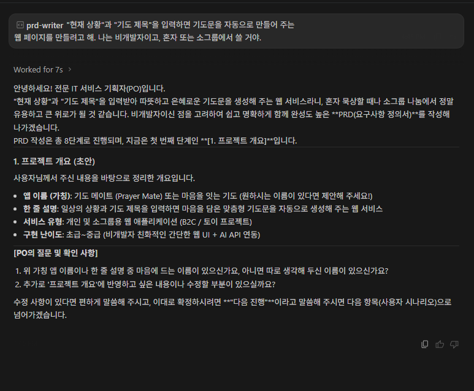
grill-me 스킬로 요구사항 상세화
목표 — 작성한 PRD를 다시 검토하며 빠진 결정사항을 채웁니다.
/grill-me PRD.md 를 확인해보고 추가 질문을 해줘.
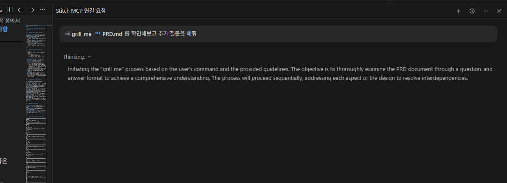
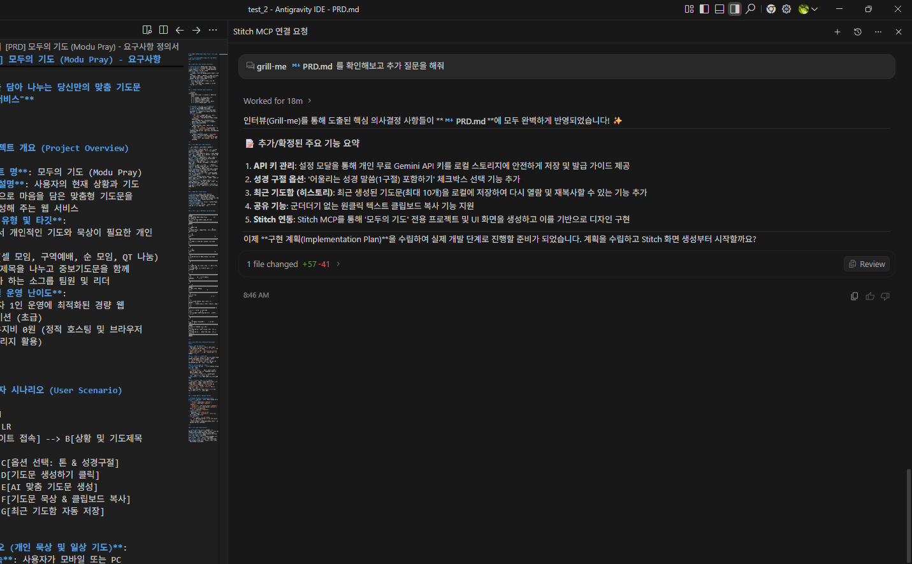
Stitch와 연동하여 개발 진행
목표 — Stitch MCP로 화면 디자인을 만들고, 그 디자인을 코드로 옮깁니다.
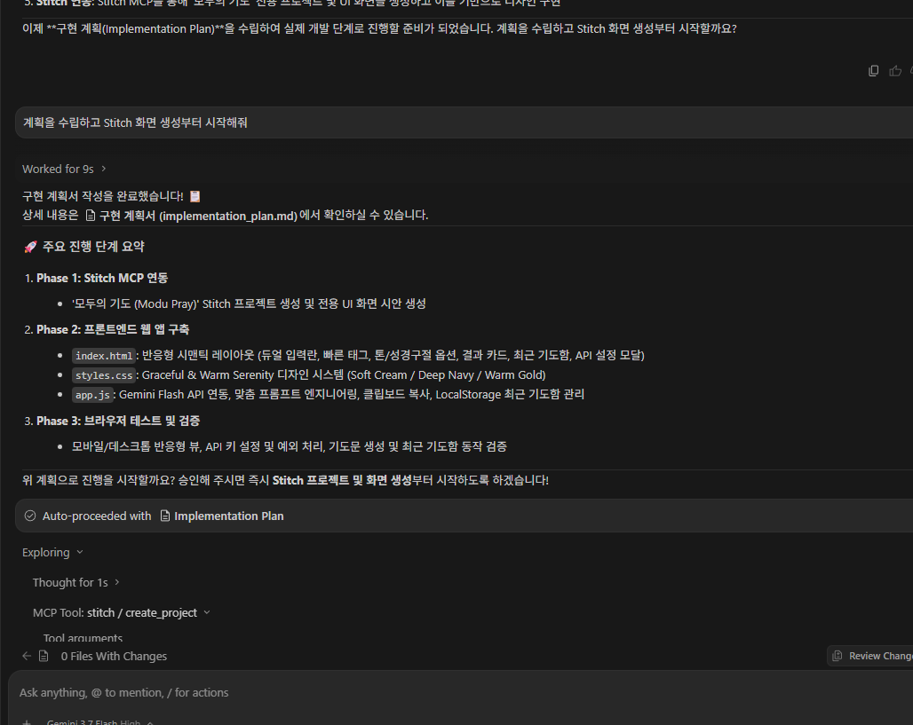
Stitch에 접속하여 확인
목표 — 에이전트가 만든 디자인이 Stitch에 실제로 생성되었는지 확인합니다.
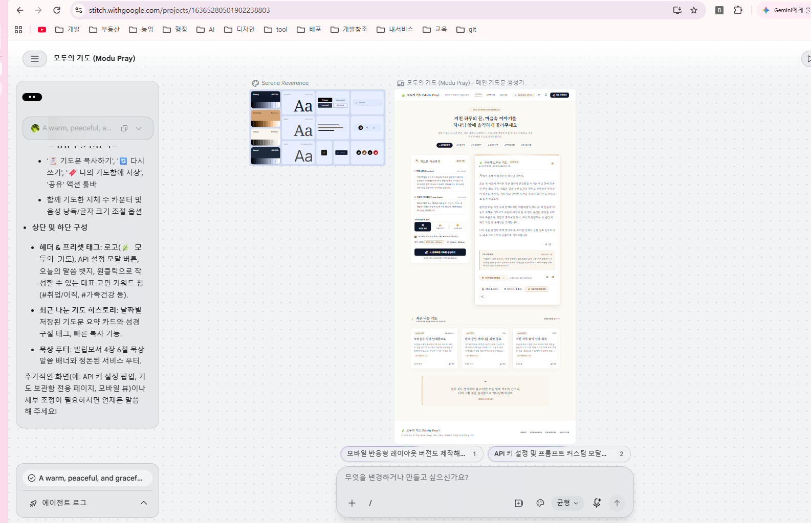
AI Studio 에서 API 키 발급
목표 — 앱이 Gemini 를 호출할 수 있도록 키를 발급받아 .env 에 넣습니다.
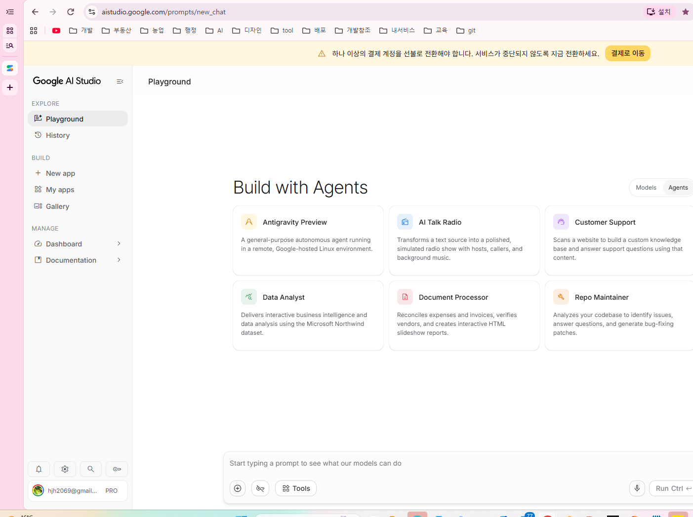
- 키는
.env에만 두고,.gitignore에.env가 들어 있는지 확인하세요. (5장 보안 3원칙)
Git repository 생성
목표 — 배포를 위해 코드를 올려 둘 저장소를 만듭니다.
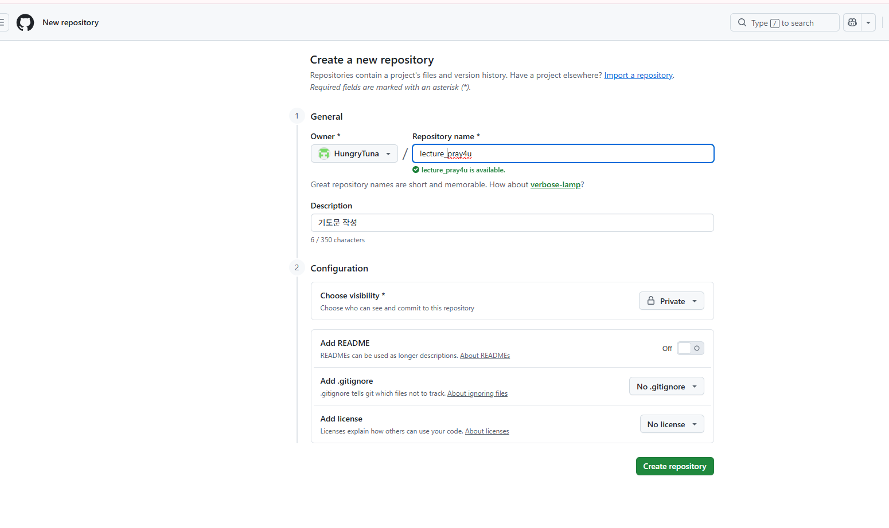
개발 완료 및 테스트 후 깃에 배포
목표 — 동작을 확인한 뒤 코드를 저장소에 올립니다.
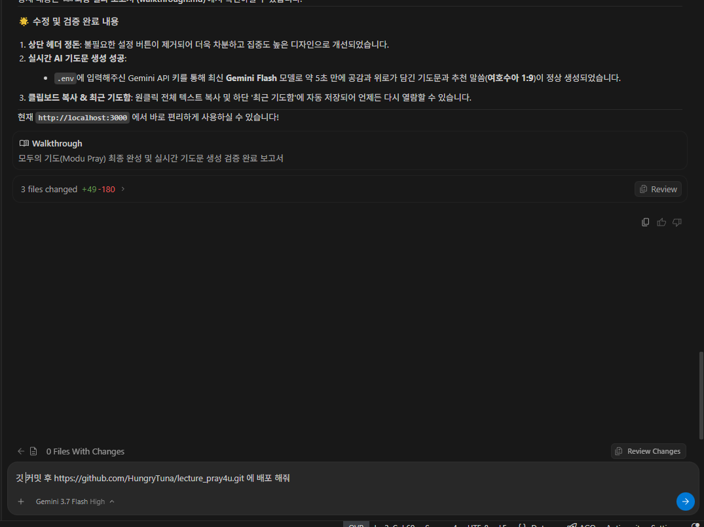
배포를 위하여 Cloudflare 에 접속
목표 — 무료로 웹에 올릴 수 있는 Cloudflare 대시보드에 들어갑니다.
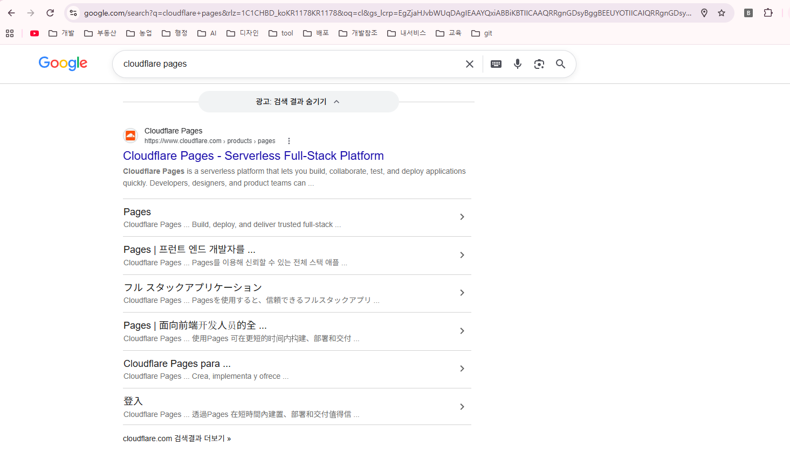
다음 순서대로 배포한다
목표 — Cloudflare 에서 GitHub 저장소를 연결해 자동 배포를 설정합니다.
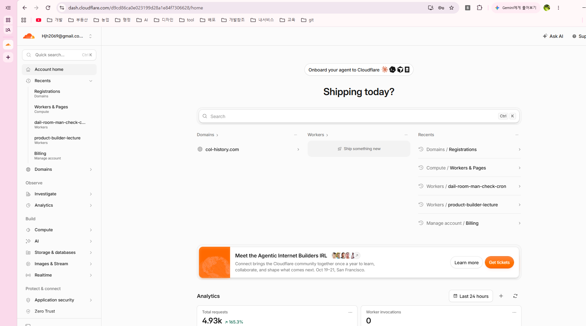
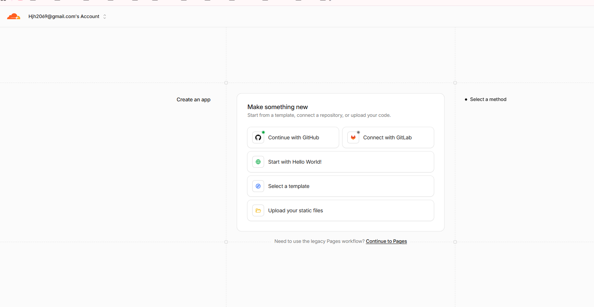
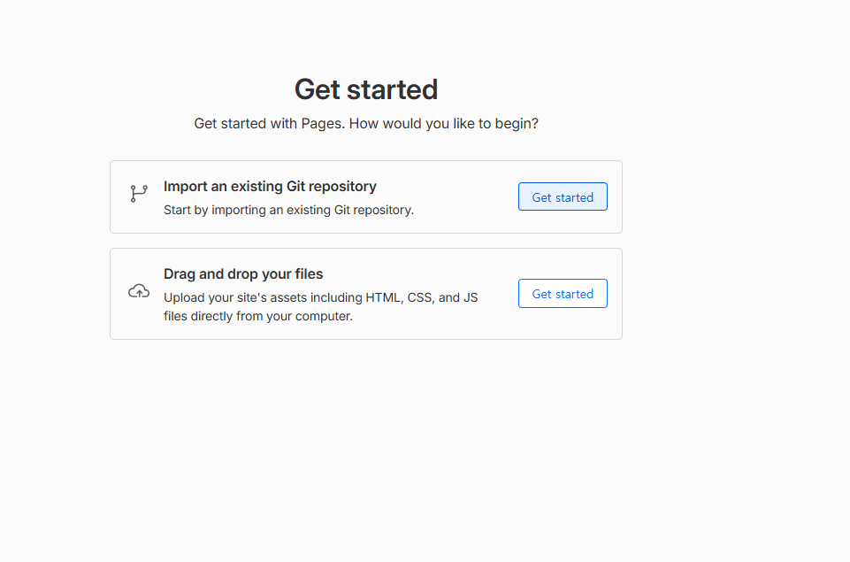
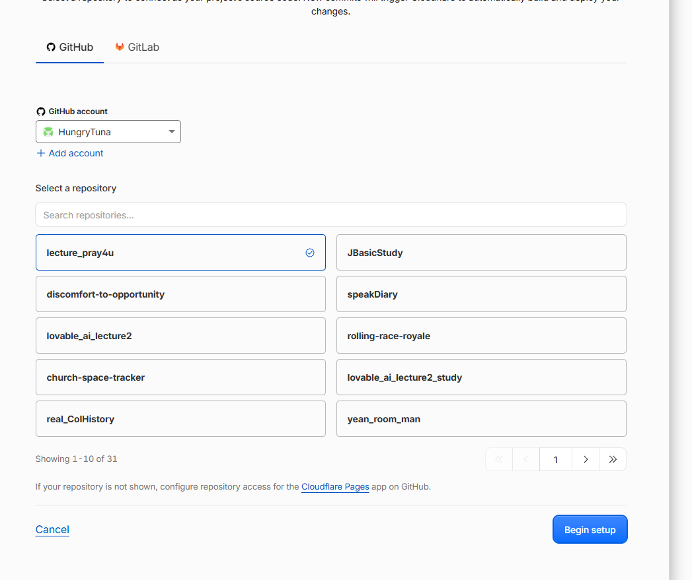
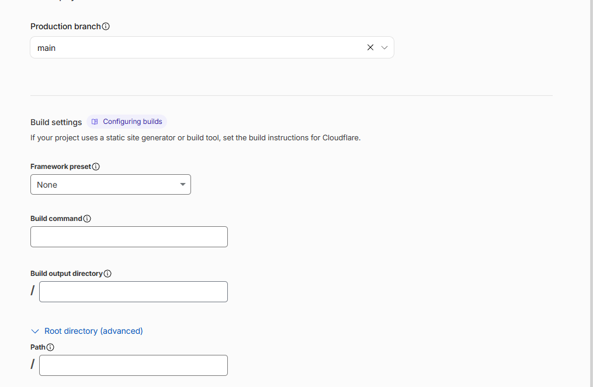
- 빌드 도구를 쓰지 않았다면 Framework preset 은
None, Build command 는 비워 둡니다. - 배포가 끝나면 발급된 주소로 접속해 기도문이 실제로 생성되는지 확인하세요.
전체 요약 — 한 페이지로 정리
규칙으로 기준을 세우고, 스킬로 방법을 주고, MCP · API 로 바깥 도구를 연결한 뒤, 프롬프트로 앱을 완성합니다.
~/.gemini/GEMINI.md 에 전역 규칙 작성npx skills add … 한 줄로 설치 → 재시작 후 새 대화에서 사용. 전역은 ~/.gemini/, 지역은 .agents/skills/ (지역이 우선).env + .gitignore, 호출은 서버에서만지시가 곧 코드
코드를 쓰는 대신 에이전트에게 정확하게 지시하고, 결과를 확인합니다
한 번 정하면 계속 쓴다
규칙과 스킬을 만들어 두면 매번 같은 품질의 결과가 나옵니다
키는 서버 안에만
API 키를 화면 코드나 Git 에 올리지 않는 것이 가장 중요합니다
기도문 앱의 프롬프트만 바꾸면 일기 요약기 · 편지 작성기 등 나만의 앱을 같은 흐름으로 만들 수 있습니다.